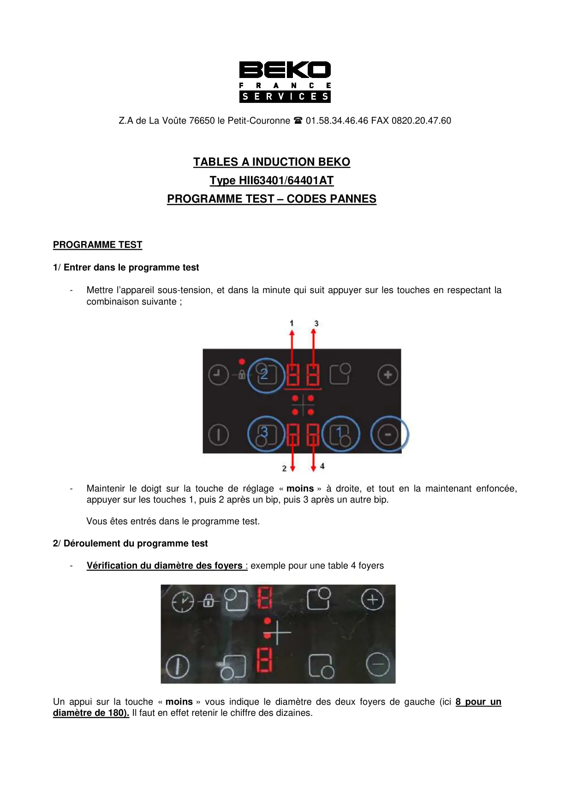
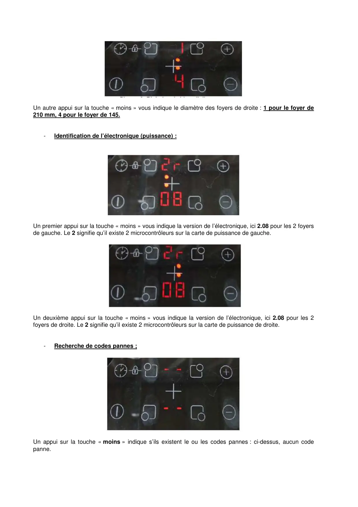
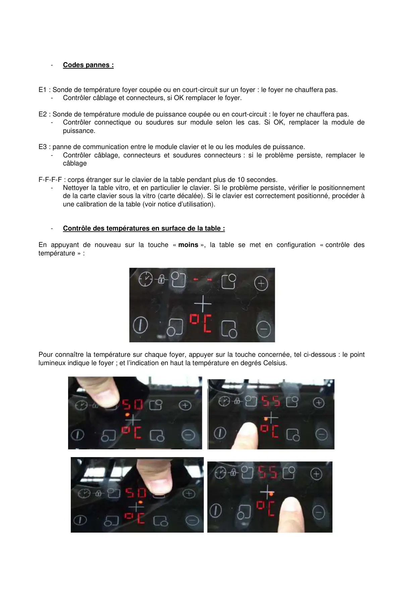
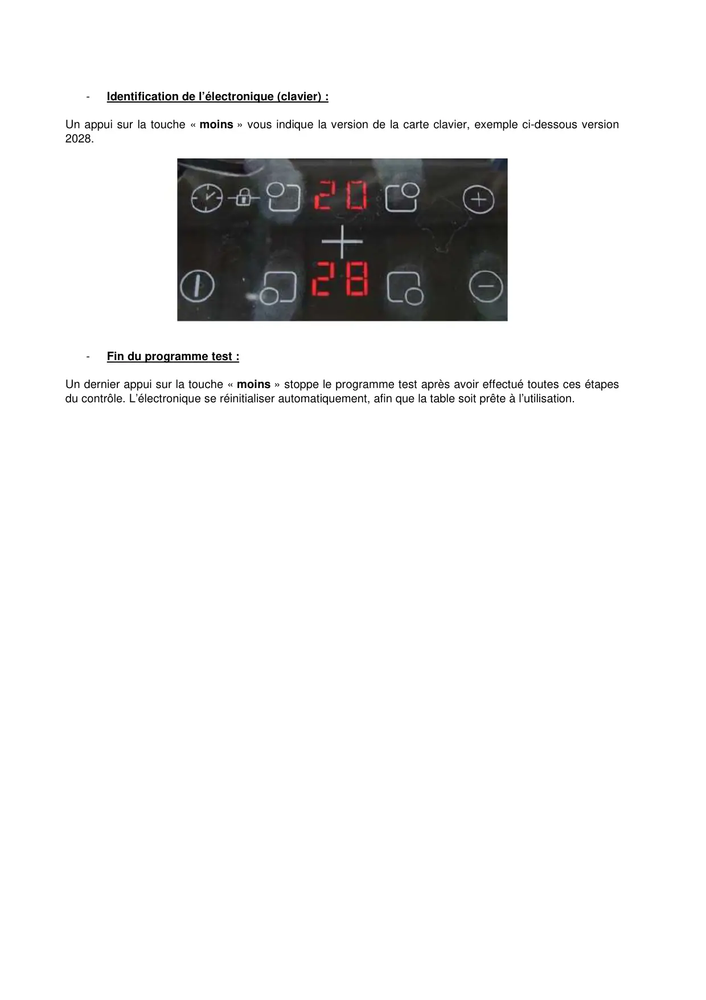

ProgrTest induction

Z.A de La Voûte 76650 le Petit-Couronne 01.58.34.46.46 FAX 0820.20.47.60TABLES A INDUCTION BEKOType HII63401/64401ATPROGRAMME TEST – CODES PANNESPROGRAMME TEST1/ Entrer dans le programme test-Mettre l’appareil sous-tension, et dans la minute qui suit appuyer sur les touches en respectant lacombinaison suivante ;-Maintenir le doigt sur la touche de réglage « moins » à droite, et tout en la maintenant enfoncée,appuyer sur les touches 1, puis 2 après un bip, puis 3 après un autre bip.Vous êtes entrés dans le programme test.2/ Déroulement du programme test-Vérification du diamètre des foyers : exemple pour une table 4 foyersUn appui sur la touche « moins » vous indique le diamètre des deux foyers de gauche (ici 8 pour undiamètre de 180). Il faut en effet retenir le chiffre des dizaines.
1 / 4
Un autre appui sur la touche « moins » vous indique le diamètre des foyers de droite : 1 pour le foyer de210 mm, 4 pour le foyer de 145.-Identification de l’électronique (puissance) :Un premier appui sur la touche « moins » vous indique la version de l’électronique, ici 2.08 pour les 2 foyersde gauche. Le 2 signifie qu’il existe 2 microcontrôleurs sur la carte de puissance de gauche.Un deuxième appui sur la touche « moins » vous indique la version de l’électronique, ici 2.08 pour les 2foyers de droite. Le 2 signifie qu’il existe 2 microcontrôleurs sur la carte de puissance de droite.-Recherche de codes pannes ;Un appui sur la touche « moins » indique s’ils existent le ou les codes pannes : ci-dessus, aucun codepanne.
2 / 4
-Codes pannes :E1 : Sonde de température foyer coupée ou en court-circuit sur un foyer : le foyer ne chauffera pas.-Contrôler câblage et connecteurs, si OK remplacer le foyer.E2 : Sonde de température module de puissance coupée ou en court-circuit : le foyer ne chauffera pas.-Contrôler connectique ou soudures sur module selon les cas. Si OK, remplacer la module depuissance.E3 : panne de communication entre le module clavier et le ou les modules de puissance.-Contrôler câblage, connecteurs et soudures connecteurs : si le problème persiste, remplacer lecâblageF-F-F-F : corps étranger sur le clavier de la table pendant plus de 10 secondes.-Nettoyer la table vitro, et en particulier le clavier. Si le problème persiste, vérifier le positionnementde la carte clavier sous la vitro (carte décalée). Si le clavier est correctement positionné, procéder àune calibration de la table (voir notice d’utilisation).-Contrôle des températures en surface de la table :En appuyant de nouveau sur la touche « moins », la table se met en configuration « contrôle destempérature » :Pour connaître la température sur chaque foyer, appuyer sur la touche concernée, tel ci-dessous : le pointlumineux indique le foyer ; et l’indication en haut la température en degrés Celsius.
3 / 4
-Identification de l’électronique (clavier) :Un appui sur la touche « moins » vous indique la version de la carte clavier, exemple ci-dessous version2028.-Fin du programme test :Un dernier appui sur la touche « moins » stoppe le programme test après avoir effectué toutes ces étapesdu contrôle. L’électronique se réinitialiser automatiquement, afin que la table soit prête à l’utilisation.
4 / 4